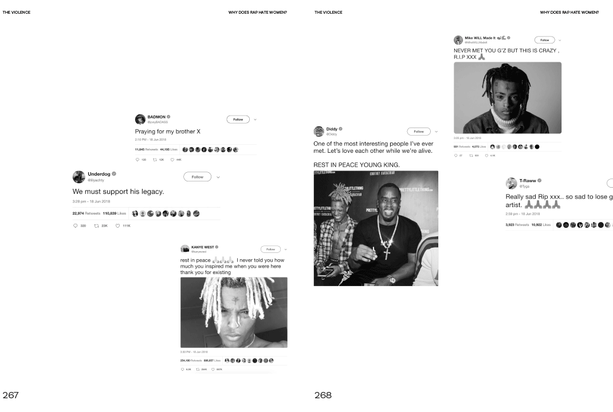
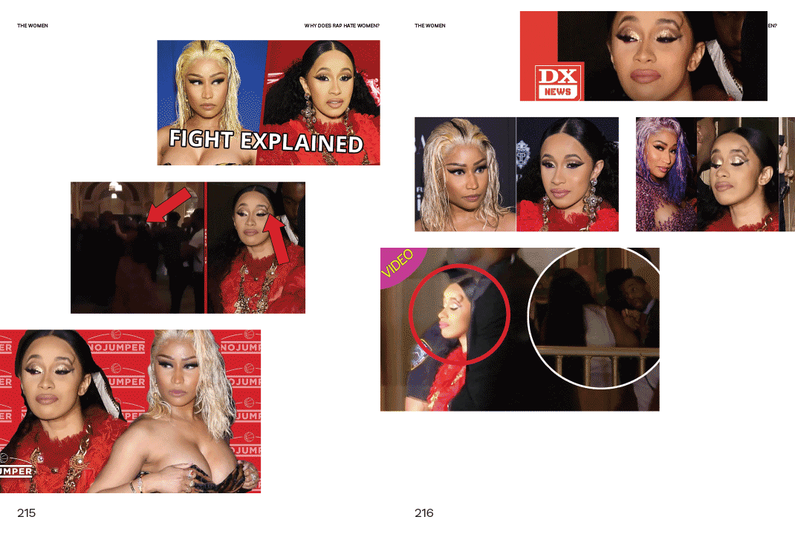
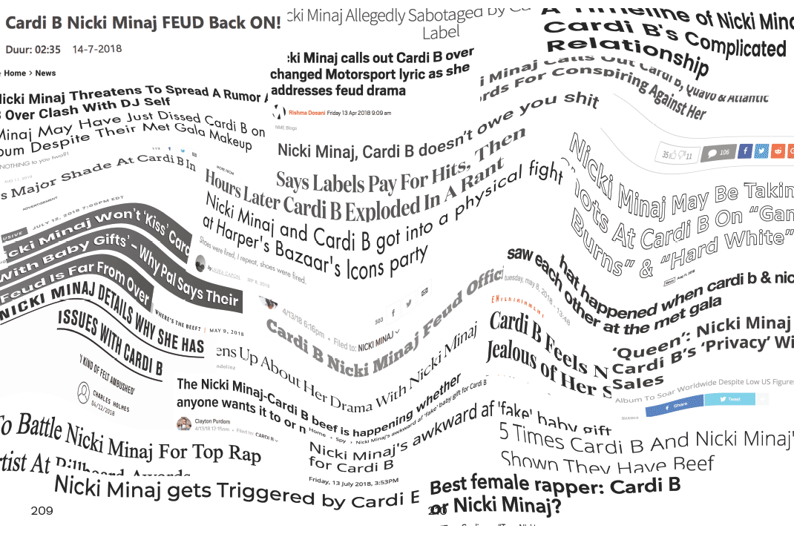
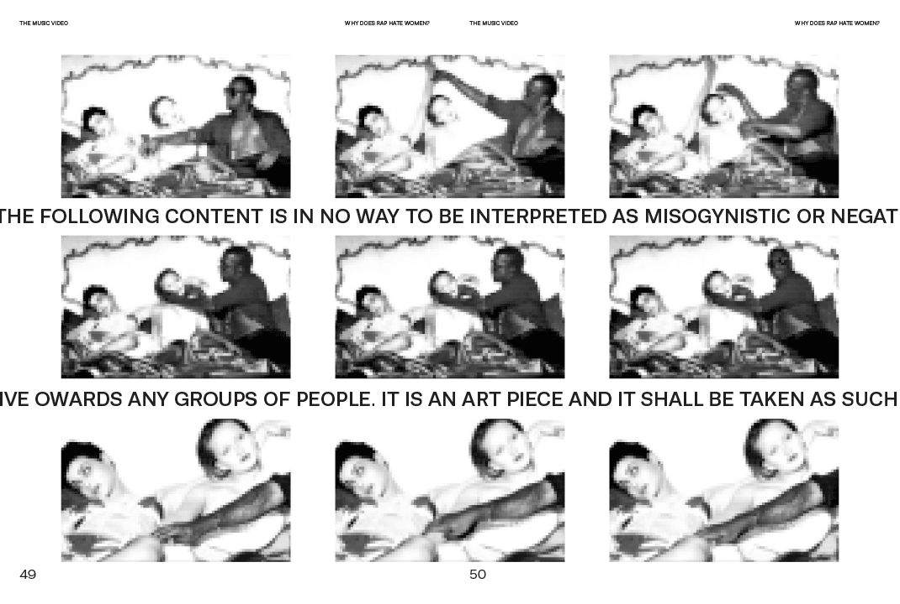
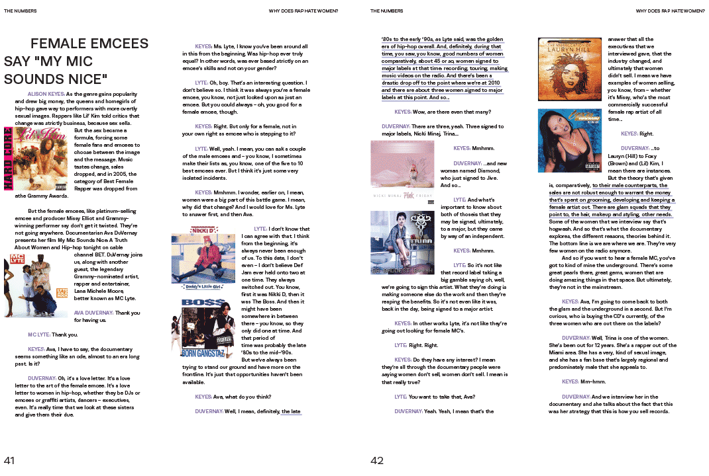
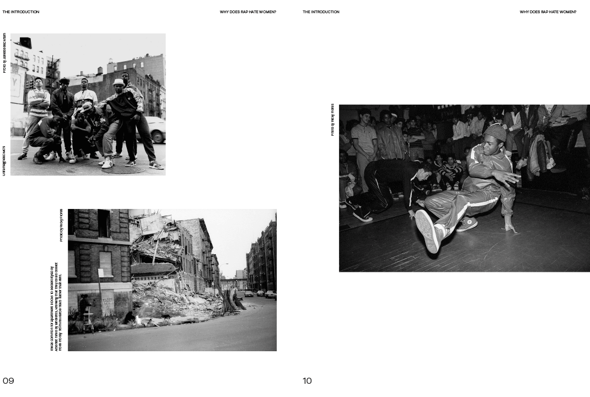

Katie Paton
Why Does Rap
Hate Women?
Hate Women?
Why Does Rap Hate Women?






Instagram
Statement
This project began with my love for rap mixed with the guilt I felt for that love.The rap industry has a
systematic problem with how it thinks of and treats women.
I, and many other listeners I’m sure, know the blatant misogyny exists in the lyrics and music videos. But it becomes easy to ignore because the music is so engrained into popular culture, we hear it to an extent where we are desensitised to the sexism.
Why is it so easily accepted and/or dismissed by rappers, producers, labels and listeners? Is it because we’re just used to it? Or is it not worth questioning, or turning against, because at the end of the day, we like the music. Nobody wants to give up their favourite genre in an act of protest, even though our consumer dollar is supporting a toxic industry.
I also wanted to find out where the misogyny comes from, why it exists: a complicated question involving gender politics, institutionalised racism and classism, a culture of violence and warped views of what masculinity means. These findings can be used to attempt to understand:
• The Numbers—why are there so little female rappers compared to male? And why are these few women never rewarded for their success?
• The Videos—representation of women versus men.
• The Lyrics—the vernacular that is rampant with misogyny and violence and origins.
My research led me to find the rising numbers of rappers who have committed crimes against women, wether that be domestic abuse, sexual harassment and rape. The numbers have led to many questioning if the lyrics and culture of rap are responsible for the real life crime? It is a polarising inquiry that never boils down to an easy answer, if any answer at all. As I started to look into these alleged criminals, it was disgusting to see that majority of the artists’ fans completely ignored the allegations, and continued to support the rappers. Listeners create the hashtags #freekodak and #freexxx, Spotify listens grow and fellow rappers publicly side with convicted artists. It seems like rap has created a culture that raises men to the extent where they become invincible, like rapper Tekashi 6ix9ine who has plead guilty to “using a 13-year-old child in a sexual performance” and still gets his records into the Billboard Hot 100.
Lastly, I looked into how female rappers are navigating the male dominated industry. This included the history of the female MC, and how branding and self-image shape women’s perception and success, from Missy Elliot in the 1990s to Nicki Minaj and Cardi B now. With (arguably) only these two female rappers making waves in the industry, this has cultivated a competitive culture wherein everyone seems to believe there can only be one rap ‘queen’ - a toxic and sexist environment for women. Finally, I wanted to see if female rappers are attempting to change the misogyny surrounding them however it appears that most preach female empowerment
I, and many other listeners I’m sure, know the blatant misogyny exists in the lyrics and music videos. But it becomes easy to ignore because the music is so engrained into popular culture, we hear it to an extent where we are desensitised to the sexism.
Why is it so easily accepted and/or dismissed by rappers, producers, labels and listeners? Is it because we’re just used to it? Or is it not worth questioning, or turning against, because at the end of the day, we like the music. Nobody wants to give up their favourite genre in an act of protest, even though our consumer dollar is supporting a toxic industry.
I also wanted to find out where the misogyny comes from, why it exists: a complicated question involving gender politics, institutionalised racism and classism, a culture of violence and warped views of what masculinity means. These findings can be used to attempt to understand:
• The Numbers—why are there so little female rappers compared to male? And why are these few women never rewarded for their success?
• The Videos—representation of women versus men.
• The Lyrics—the vernacular that is rampant with misogyny and violence and origins.
My research led me to find the rising numbers of rappers who have committed crimes against women, wether that be domestic abuse, sexual harassment and rape. The numbers have led to many questioning if the lyrics and culture of rap are responsible for the real life crime? It is a polarising inquiry that never boils down to an easy answer, if any answer at all. As I started to look into these alleged criminals, it was disgusting to see that majority of the artists’ fans completely ignored the allegations, and continued to support the rappers. Listeners create the hashtags #freekodak and #freexxx, Spotify listens grow and fellow rappers publicly side with convicted artists. It seems like rap has created a culture that raises men to the extent where they become invincible, like rapper Tekashi 6ix9ine who has plead guilty to “using a 13-year-old child in a sexual performance” and still gets his records into the Billboard Hot 100.
Lastly, I looked into how female rappers are navigating the male dominated industry. This included the history of the female MC, and how branding and self-image shape women’s perception and success, from Missy Elliot in the 1990s to Nicki Minaj and Cardi B now. With (arguably) only these two female rappers making waves in the industry, this has cultivated a competitive culture wherein everyone seems to believe there can only be one rap ‘queen’ - a toxic and sexist environment for women. Finally, I wanted to see if female rappers are attempting to change the misogyny surrounding them however it appears that most preach female empowerment